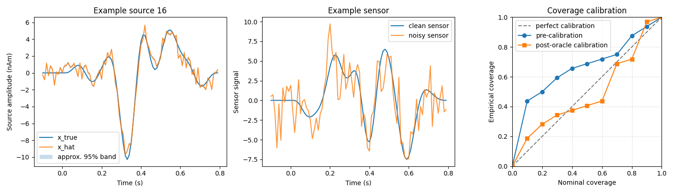

Note
Go to the end to download the full example code.
09. End-to-End Workflow#
This tutorial ties together the main CaliBrain component classes in one small, runnable workflow:
SourceSimulatorfor source-level ground truth;LeadfieldBuilderfor a leadfield object;SensorSimulatorfor noisy sensor measurements;SourceEstimatorfor posterior source reconstruction;UncertaintyEstimatorfor pre-calibration empirical coverage;UncertaintyCalibratorfor post-calibration isotonic recalibration.
It is intentionally lightweight and fully synthetic, but it follows the same conceptual order as the current fixed-orientation calibration workflow.
Scientific motivation#
CaliBrain studies whether posterior uncertainty from inverse source imaging is empirically calibrated. An end-to-end run therefore needs all upstream pieces:
simulate source activity
x_true;obtain a leadfield
L;project to noisy sensors
y_noisy;reconstruct posterior mean and covariance;
derive uncertainty intervals and empirical coverage;
optionally fit a recalibration map on a train split and evaluate it on a matched eval split.
This tutorial demonstrates that full chain with the current high-level class interfaces and an active fixed-orientation solver.
from pathlib import Path
import matplotlib.pyplot as plt
import numpy as np
from mne.io.constants import FIFF
from calibrain import (
LeadfieldBuilder,
MetricEvaluator,
SensorSimulator,
SourceEstimator,
SourceSimulator,
UncertaintyCalibrator,
UncertaintyEstimator,
gamma_map_sflex,
)
RANDOM_SEED = 91
Step 1: define a compact fixed-orientation simulation setting#
We keep the example fixed-orientation because it is the smallest configuration that still exercises the full calibration chain. The same scientific logic extends to free orientation in later tutorials.
erp_config = {
"tmin": -0.1,
"tmax": 0.8,
"stim_onset": 0.0,
"sfreq": 100,
"fmin": 2,
"fmax": 8,
"amplitude_distribution": {
"median": 8.0,
"sigma": 0.15,
"clip": [2.0, 20.0],
},
"random_erp_timing": False,
"erp_min_length": 20,
}
n_sensors = 16
n_sources = 32
nnz = 4
alpha_snr = 0.7
nominal_coverages = np.linspace(0.0, 1.0, 11)
source_simulator = SourceSimulator(ERP_config=erp_config)
sensor_simulator = SensorSimulator()
uncertainty_estimator = UncertaintyEstimator(nominal_coverages=nominal_coverages)
metric_evaluator = MetricEvaluator(uncertainty_estimator)
sensor_simulator.set_sensor_metadata(
kind=FIFF.FIFFV_EEG_CH,
units=FIFF.FIFF_UNIT_V,
unitmult=FIFF.FIFF_UNITM_MU,
coil_type=FIFF.FIFFV_COIL_EEG,
)
Step 2: build a deterministic synthetic leadfield with LeadfieldBuilder#
In paper-scale analyses, LeadfieldBuilder usually loads a precomputed
subject-specific leadfield. Here we use its lightweight random mode and
pair it with synthetic source coordinates for the sFLEX solver.
leadfield_builder = LeadfieldBuilder(leadfield_dir="unused_demo_leadfields")
leadfield_data = leadfield_builder.get_leadfield(
subject="demo",
orientation_type="fixed",
retrieve_mode="random",
n_sensors=n_sensors,
n_sources=n_sources,
return_metadata=True,
)
L = leadfield_data.leadfield
src_coords = np.random.default_rng(RANDOM_SEED).normal(scale=0.04, size=(n_sources, 3))
print("leadfield shape:", L.shape)
print("source coordinates shape:", src_coords.shape)
leadfield shape: (16, 32)
source coordinates shape: (32, 3)
Step 3: generate matched train/eval datasets#
A calibration tutorial needs at least two splits:
a train split for fitting the isotonic recalibration map;
an eval split for reporting pre- and post-calibration coverage.
We keep the condition family fixed and change only the random seed. This
corresponds to the logic of post_oracle in the workflow documentation.
x_true_train, active_sources_train = source_simulator.simulate(
n_sources=n_sources,
nnz=nnz,
orientation_type="fixed",
seed=RANDOM_SEED,
)
y_clean_train, y_noisy_train, noise_train, _ = sensor_simulator.simulate(
x=x_true_train,
L=L,
alpha_SNR=alpha_snr,
sensor_white_noise_std=0.2,
seed=RANDOM_SEED,
)
noise_var_train = max(float(np.var(noise_train)), 1e-12)
estimator_train = SourceEstimator(
solver=gamma_map_sflex,
solver_params={"max_iter": 150, "tol": 1e-7, "sigma": 0.01, "src_coords": src_coords},
noise_var=noise_var_train,
n_orient=1,
)
estimator_train.fit(L, y_noisy_train)
result_train = estimator_train.predict()
train_dataset = {
"orientation_type": "fixed",
"coil_type": None,
"x_true": x_true_train,
"x_hat": result_train["posterior_mean"],
"posterior_cov": result_train["posterior_cov"],
"posterior_var": uncertainty_estimator.posterior_variance_from_cov(result_train["posterior_cov"]),
"n_sources": x_true_train.shape[0],
"n_times": x_true_train.shape[1],
"seed": RANDOM_SEED,
"nnz": nnz,
"alpha_SNR": alpha_snr,
"solver": "gamma_map_sflex",
"noise_type": "oracle",
"active_sources": active_sources_train,
"noise_var": noise_var_train,
}
x_true_eval, active_sources_eval = source_simulator.simulate(
n_sources=n_sources,
nnz=nnz,
orientation_type="fixed",
seed=RANDOM_SEED + 1,
)
y_clean_eval, y_noisy_eval, noise_eval, _ = sensor_simulator.simulate(
x=x_true_eval,
L=L,
alpha_SNR=alpha_snr,
sensor_white_noise_std=0.2,
seed=RANDOM_SEED + 1,
)
noise_var_eval = max(float(np.var(noise_eval)), 1e-12)
estimator_eval = SourceEstimator(
solver=gamma_map_sflex,
solver_params={"max_iter": 150, "tol": 1e-7, "sigma": 0.01, "src_coords": src_coords},
noise_var=noise_var_eval,
n_orient=1,
)
estimator_eval.fit(L, y_noisy_eval)
result_eval = estimator_eval.predict()
eval_dataset = {
"orientation_type": "fixed",
"coil_type": None,
"x_true": x_true_eval,
"x_hat": result_eval["posterior_mean"],
"posterior_cov": result_eval["posterior_cov"],
"posterior_var": uncertainty_estimator.posterior_variance_from_cov(result_eval["posterior_cov"]),
"n_sources": x_true_eval.shape[0],
"n_times": x_true_eval.shape[1],
"seed": RANDOM_SEED + 1,
"nnz": nnz,
"alpha_SNR": alpha_snr,
"solver": "gamma_map_sflex",
"noise_type": "oracle",
"active_sources": active_sources_eval,
"noise_var": noise_var_eval,
}
print("train x_true shape:", train_dataset["x_true"].shape)
print("eval x_hat shape:", eval_dataset["x_hat"].shape)
print("eval posterior_var shape:", eval_dataset["posterior_var"].shape)
train x_true shape: (32, 90)
eval x_hat shape: (32, 90)
eval posterior_var shape: (32,)
Step 4: compute the pre-calibration coverage curve#
UncertaintyEstimator converts posterior means and source-wise variances
into intervals over the nominal coverage grid. In the current workflow,
calibration is typically performed in aggregated mode, so we use the
time-aggregated interval routine here.
pre_curve = uncertainty_estimator.calibration_curve_intervals_aggregated(
x_true=eval_dataset["x_true"],
x_hat=eval_dataset["x_hat"],
posterior_var=eval_dataset["posterior_var"],
)
pre_metrics = metric_evaluator.calibration_metrics_4(
pre_curve["nominal_coverages"],
pre_curve["empirical_coverages"],
)
print("pre empirical coverages:", np.round(pre_curve["empirical_coverages"], 3))
print("pre calibration metrics:", pre_metrics)
pre empirical coverages: [0. 0.438 0.5 0.594 0.656 0.688 0.719 0.75 0.875 0.938 1. ]
pre calibration metrics: {'max_underconfidence_deviation': 0.0, 'max_overconfidence_deviation': 0.3375, 'mean_absolute_deviation': 0.15056818181818177, 'mean_signed_deviation': 0.15056818181818177}
Step 5: fit and evaluate post-calibration with UncertaintyCalibrator#
UncertaintyCalibrator consumes the same dataset structure used by the
workflow. Here we fit on the train split and evaluate on the matched eval
split. This is the high-level class API corresponding to post_oracle.
calibrator = UncertaintyCalibrator(uncertainty_estimator, metric_evaluator)
calibration_result = calibrator.calibrate(
train_data=train_dataset,
test_data=eval_dataset,
fit=True,
)
post_block = calibration_result["post_calibration"]
print(
"post recalibrated nominal coverages:",
np.round(post_block["recalibrated_nominal_coverages"], 3),
)
print(
"post empirical coverages:",
np.round(post_block["empirical_coverages"], 3),
)
post recalibrated nominal coverages: [0. 0.012 0.03 0.048 0.066 0.083 0.11 0.42 0.553 0.936 1. ]
post empirical coverages: [0. 0.188 0.281 0.344 0.375 0.406 0.438 0.688 0.719 0.969 1. ]
Step 6: visualize the full end-to-end result#
The figure summarizes three stages of the workflow:
one reconstructed source waveform;
one clean/noisy sensor trace;
pre- and post-calibration coverage curves.
time = np.arange(train_dataset["x_true"].shape[1]) / erp_config["sfreq"] + erp_config["tmin"]
example_source = int(eval_dataset["active_sources"][0])
fig, axes = plt.subplots(1, 3, figsize=(15, 4.2))
axes[0].plot(time, eval_dataset["x_true"][example_source], label="x_true")
axes[0].plot(time, eval_dataset["x_hat"][example_source], label="x_hat", alpha=0.85)
band = 1.96 * np.sqrt(eval_dataset["posterior_var"][example_source] / eval_dataset["x_true"].shape[1])
axes[0].fill_between(
time,
eval_dataset["x_hat"][example_source] - band,
eval_dataset["x_hat"][example_source] + band,
alpha=0.25,
label="approx. 95% band",
)
axes[0].set(
xlabel="Time (s)",
ylabel="Source amplitude (nAm)",
title=f"Example source {example_source}",
)
axes[0].legend(loc="best")
y_clean_eval, y_noisy_eval, _, _ = sensor_simulator.simulate(
x=eval_dataset["x_true"],
L=L,
alpha_SNR=alpha_snr,
sensor_white_noise_std=0.2,
seed=int(eval_dataset["seed"]),
)
axes[1].plot(time, y_clean_eval[0], label="clean sensor")
axes[1].plot(time, y_noisy_eval[0], label="noisy sensor", alpha=0.8)
axes[1].set(
xlabel="Time (s)",
ylabel="Sensor signal",
title="Example sensor",
)
axes[1].legend(loc="best")
axes[2].plot([0, 1], [0, 1], "--", color="0.5", label="perfect calibration")
axes[2].plot(
pre_curve["nominal_coverages"],
pre_curve["empirical_coverages"],
"o-",
label="pre-calibration",
)
axes[2].plot(
post_block["nominal_coverages"],
post_block["empirical_coverages"],
"s-",
label="post-oracle calibration",
)
axes[2].set(
xlabel="Nominal coverage",
ylabel="Empirical coverage",
xlim=(0, 1),
ylim=(0, 1),
title="Coverage calibration",
)
axes[2].set_aspect("equal", adjustable="box")
axes[2].grid(True, linestyle="--", alpha=0.4)
axes[2].legend(loc="best")
fig.tight_layout()

Summary#
This single tutorial used the current high-level component interfaces in the same order as the calibration workflow:
SourceSimulatorproduced ground-truth source activity;LeadfieldBuildersupplied a leadfield and source coordinates;SensorSimulatorgenerated noisy sensor measurements;SourceEstimatorproduced posterior means and covariance;UncertaintyEstimatorcomputed pre-calibration empirical coverage;UncertaintyCalibratorfitted and evaluated a post-calibration mapping.
For larger experiments, the workflow scripts automate the same logic across many runs, then write manifest entries, aggregated datasets, and calibration summaries on disk.
Total running time of the script: (0 minutes 0.402 seconds)